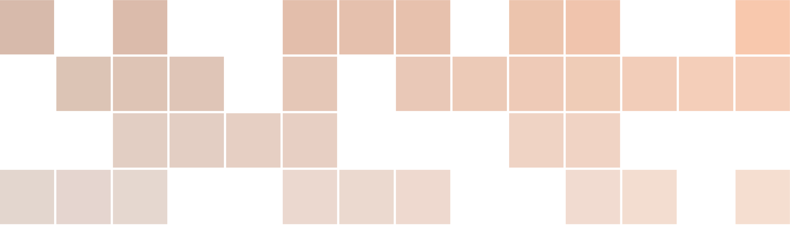

<!DOCTYPE html>
<html lang="" xml:lang="">
<head>

  <meta charset="utf-8" />
  <meta http-equiv="X-UA-Compatible" content="IE=edge" />
  <title>Bibliografia | Apunts d’Àlgebra Lineal</title>
  <meta name="description" content="Apunts d’un curs d’Àlgebra Lineal a la UAB" />
  <meta name="generator" content="bookdown 0.39 and GitBook 2.6.7" />

  <meta property="og:title" content="Bibliografia | Apunts d’Àlgebra Lineal" />
  <meta property="og:type" content="book" />
  
  <meta property="og:description" content="Apunts d’un curs d’Àlgebra Lineal a la UAB" />
  <meta name="github-repo" content="mmasdeu/algebralineal" />

  <meta name="twitter:card" content="summary" />
  <meta name="twitter:title" content="Bibliografia | Apunts d’Àlgebra Lineal" />
  
  <meta name="twitter:description" content="Apunts d’un curs d’Àlgebra Lineal a la UAB" />
  

<meta name="author" content="Marc Masdeu, Albert Ruiz" />


<meta name="date" content="2024-05-02" />

  <meta name="viewport" content="width=device-width, initial-scale=1" />
  <meta name="apple-mobile-web-app-capable" content="yes" />
  <meta name="apple-mobile-web-app-status-bar-style" content="black" />
  
  
<link rel="prev" href="ortogonalitat.html"/>

<script src="libs/jquery-3.6.0/jquery-3.6.0.min.js"></script>
<script src="https://cdn.jsdelivr.net/npm/fuse.js@6.4.6/dist/fuse.min.js"></script>
<link href="libs/gitbook-2.6.7/css/style.css" rel="stylesheet" />
<link href="libs/gitbook-2.6.7/css/plugin-table.css" rel="stylesheet" />
<link href="libs/gitbook-2.6.7/css/plugin-bookdown.css" rel="stylesheet" />
<link href="libs/gitbook-2.6.7/css/plugin-highlight.css" rel="stylesheet" />
<link href="libs/gitbook-2.6.7/css/plugin-search.css" rel="stylesheet" />
<link href="libs/gitbook-2.6.7/css/plugin-fontsettings.css" rel="stylesheet" />
<link href="libs/gitbook-2.6.7/css/plugin-clipboard.css" rel="stylesheet" />


<link href="libs/anchor-sections-1.1.0/anchor-sections.css" rel="stylesheet" />
<link href="libs/anchor-sections-1.1.0/anchor-sections-hash.css" rel="stylesheet" />
<script src="libs/anchor-sections-1.1.0/anchor-sections.js"></script>
<!-- Autogenerated by build.sh, do not edit! -->
<span class="math inline" style="display: none">
\(\newcommand{\bbdef}[1]{\expandafter\newcommand% 
	\csname#1\endcsname{\mathbb{#1}}}
% \bbdef{C} \bbdef{F} \bbdef{R} \bbdef{Z} \bbdef{Q} \bbdef{K} \bbdef{N}

% %%% SCRIPT COMMANDS:  \cala=\mathcal{A}, ... \calz=\mathcal{Z}
% \newcounter{let} \setcounter{let}{0}
% \loop\stepcounter{let}
% \expandafter\edef\csname cal\alph{let}\endcsname%
% {\noexpand\mathcal{\Alph{let}}}
% \ifnum\thelet<26\repeat


\renewcommand{\1}{\mathbf{1}}
\newcommand{\0}{\mathbf{0}}

\newenvironment{amatrix}[1]{%
  \left(\begin{array}{@{}*{#1}{r}|r@{}}
}{%
  \end{array}\right)
}

\newenvironment{llista-exercicis}{%
\subsection*{Exercicis recomanats}
Els exercicis que segueixen són útils per practicar el 
material presentat. La numeració és la de~\cite{Bret}.
\begin{description}}{\end{description}}

\newcommand{\smat}[1]{\left(\begin{smallmatrix}#1\end{smallmatrix}\right)}

\renewcommand{\setminus}{\smallsetminus}
\renewcommand{\Rang}{\operatorname{Rang}}
\renewcommand{\rref}{\operatorname{rref}}
\renewcommand{\rcef}{\operatorname{rcef}}
\renewcommand{\Ker}{\operatorname{Ker}}
\renewcommand{\Ima}{\operatorname{Im}}
\renewcommand{\Id}{\operatorname{Id}}
\renewcommand{\Map}{\operatorname{Map}}
\renewcommand{\sign}{\operatorname{Sign}}
\renewcommand{\refl}{\operatorname{Refl}}
\renewcommand{\Tr}{\operatorname{Tr}}
\renewcommand{\multalg}{\operatorname{MultAlg}}
\renewcommand{\multgeom}{\operatorname{MultGeom}}
\renewcommand{\proj}{\operatorname{Proj}}


\renewcommand{\Q}{\mathbb{Q}}
\renewcommand{\N}{\mathbb{N}}

\renewcommand{\Z}{\mathbb{Z}}
\renewcommand{\K}{\mathbb{K}}

\renewcommand{\R}{\mathbb{R}}
\renewcommand{\F}{\mathbb{F}}
\renewcommand{\CC}{\mathbb{C}}
\renewcommand{\C}{\mathbb{C}}


\renewcommand{\fX}{\mathfrak{X}}

\renewcommand{\SL}{\operatorname{SL}}
\renewcommand{\GL}{\operatorname{GL}}
\renewcommand{\PSL}{\operatorname{PSL}}
\renewcommand{\PGL}{\operatorname{PGL}}

%Some common abreviations
\renewcommand{\lto}{\longrightarrow}
\renewcommand{\dfn}{\ensuremath{:=}}
\renewcommand{\surjects}{\twoheadrightarrow}
\renewcommand{\injects}{\hookrightarrow}
\renewcommand{\id}{\operatorname{Id}}
\renewcommand{\tns}[1][]{\otimes_{\!#1}}
\renewcommand{\mtx}[4]{\left(\begin{matrix}#1&#2\\#3&#4\end{matrix}\right)}
\renewcommand{\mat}[1]{\left(\begin{matrix}#1\end{matrix}\right)}
\renewcommand{\smat}[1]{\left(\begin{smallmatrix}#1\end{smallmatrix}\right)}
\renewcommand{\smtx}[4]{\left(\begin{smallmatrix}#1&#2\\#3&#4\end{smallmatrix}\right)}

\renewcommand{\slz}{\operatorname{SL}_2(\bZ)}
\renewcommand{\to}{\longrightarrow}
\renewcommand{\dlog}{\operatorname{dlog}}
% \renewcommand{\Im}{\operatorname{Im}}
% \renewcommand{\Re}{\operatorname{Re}}

\renewcommand{\abs}[1]{|#1|}
\renewcommand{\slsh}[1]{|_{#1}}
\renewcommand{\qed}{\blacksquare}
\renewcommand{\Irr}{\operatorname{Irr}}
\renewcommand{\Aut}{\operatorname{Aut}}
\renewcommand{\Gal}{\operatorname{Gal}}
\renewcommand{\Mor}{\operatorname{Mor}}
\renewcommand{\Hom}{\operatorname{Hom}}
% \renewcommand{\implies}{\Longrightarrow}

% \renewcommand{\char}{\operatorname{char}}
\renewcommand{\car}{\operatorname{char}}
\renewcommand{\mcd}{\operatorname{mcd}}
\renewcommand{\gcd}{\operatorname{mcd}}
\renewcommand{\Eq}{\operatorname{Eq}}
\renewcommand{\res}{\operatorname{res}}
\renewcommand{\normaleq}{\trianglelefteq}
\renewcommand{\disc}{\operatorname{disc}}

\renewcommand{\cala}{\mathcal{A}}
\renewcommand{\calb}{\mathcal{B}}
\renewcommand{\calc}{\mathcal{C}}
\renewcommand{\cald}{\mathcal{D}}
\renewcommand{\cale}{\mathcal{E}}
\renewcommand{\calp}{\mathcal{P}}
\renewcommand{\calq}{\mathcal{Q}}
\renewcommand{\calr}{\mathcal{R}}
\renewcommand{\cals}{\mathcal{S}}
\renewcommand{\calt}{\mathcal{T}}\)</span>
<link rel="stylesheet" type="text/css" href="https://tikzjax.com/v1/fonts.css">
<script src="https://tikzjax.com/v1/tikzjax.js"></script>

<script type="text/x-mathjax-config">
MathJax.Hub.Config({
  extensions: ["tex2jax.js"],
  jax: ["input/TeX","output/HTML-CSS"],
  "HTML-CSS": {
      styles: {".MathJax_Preview": {visibility: "hidden"},
	       ".MathJax_Display" : {stroke: "currentColor"}},
      EqnChunk: (MathJax.Hub.Browser.isMobile ? 10 : 50)
  },
    tex2jax: {inlineMath: [["$","$"],["\\(","\\)"]]},
    TeX: {extensions: ["AMSmath.js","AMSsymbols.js","https://mat.uab.cat/~masdeu/xypic.js"],
    noUndefined: { attributes: { mathcolor: "red", mathbackground: "#FFEEEE", mathsize: "90%" } },}
});
</script>
	<script type="text/x-mathjax-config">
	(function () {
	  cookie = MathJax.HTML.Cookie.Get("menu");
	  if (cookie.renderer && cookie.renderer !== "HTML-CSS") {
	    cookie.renderer = "HTML-CSS";
	    MathJax.HTML.Cookie.Set("menu",cookie);
	  }
	})();
	</script>
<script>
  MathJax = {
    loader: {
      load: ['[custom]/xypic.js'],
      paths: {custom: '.'}
    },
    tex: {
      packages: {'[+]': ['xypic']}
    }
    
  };
</script>
<script type="text/javascript" id="MathJax-script" async
src="https://cdn.jsdelivr.net/npm/mathjax/MathJax.js?config=TeX-AMS_HTML">
</script>


<style type="text/css">
  
  div.hanging-indent{margin-left: 1.5em; text-indent: -1.5em;}
</style>
<style type="text/css">
/* Used with Pandoc 2.11+ new --citeproc when CSL is used */
div.csl-bib-body { }
div.csl-entry {
  clear: both;
}
.hanging div.csl-entry {
  margin-left:2em;
  text-indent:-2em;
}
div.csl-left-margin {
  min-width:2em;
  float:left;
}
div.csl-right-inline {
  margin-left:2em;
  padding-left:1em;
}
div.csl-indent {
  margin-left: 2em;
}
</style>

<link rel="stylesheet" href="style.css" type="text/css" />
</head>

<body>


  <div class="book without-animation with-summary font-size-2 font-family-1" data-basepath=".">

    <div class="book-summary">
      <nav role="navigation">

<ul class="summary">
<li><a href="./">Àlgebra Lineal</a></li>
<li class="toc-logo"><a href="./"></a></li>

<li class="divider"></li>
<li class="chapter" data-level="" data-path="index.html"><a href="index.html"><i class="fa fa-check"></i>Introducció</a></li>
<li class="chapter" data-level="1" data-path="matrius-i-equacions-lineals.html"><a href="matrius-i-equacions-lineals.html"><i class="fa fa-check"></i><b>1</b> Matrius i equacions lineals</a>
<ul>
<li class="chapter" data-level="1.1" data-path="matrius-i-equacions-lineals.html"><a href="matrius-i-equacions-lineals.html#matrius"><i class="fa fa-check"></i><b>1.1</b> Matrius</a></li>
<li class="chapter" data-level="1.2" data-path="matrius-i-equacions-lineals.html"><a href="matrius-i-equacions-lineals.html#subsec:opmat"><i class="fa fa-check"></i><b>1.2</b> Operacions amb matrius. Matriu invertible</a></li>
<li class="chapter" data-level="1.3" data-path="matrius-i-equacions-lineals.html"><a href="matrius-i-equacions-lineals.html#subsec:trans-el"><i class="fa fa-check"></i><b>1.3</b> Transformacions elementals en matrius</a></li>
<li class="chapter" data-level="1.4" data-path="matrius-i-equacions-lineals.html"><a href="matrius-i-equacions-lineals.html#criteri-dinvertibilitat.-rang-duna-matriu"><i class="fa fa-check"></i><b>1.4</b> Criteri d’invertibilitat. Rang d’una matriu</a></li>
<li class="chapter" data-level="1.5" data-path="matrius-i-equacions-lineals.html"><a href="matrius-i-equacions-lineals.html#resolució-de-sistemes-dequacions-lineals"><i class="fa fa-check"></i><b>1.5</b> Resolució de sistemes d’equacions lineals</a></li>
<li class="chapter" data-level="1.6" data-path="matrius-i-equacions-lineals.html"><a href="matrius-i-equacions-lineals.html#exercicis-recomanats"><i class="fa fa-check"></i><b>1.6</b> Exercicis recomanats</a></li>
</ul></li>
<li class="chapter" data-level="2" data-path="espais-vectorials-i-aplicacions-lineals.html"><a href="espais-vectorials-i-aplicacions-lineals.html"><i class="fa fa-check"></i><b>2</b> Espais vectorials i aplicacions lineals</a>
<ul>
<li class="chapter" data-level="2.1" data-path="espais-vectorials-i-aplicacions-lineals.html"><a href="espais-vectorials-i-aplicacions-lineals.html#subsec:matriusapl"><i class="fa fa-check"></i><b>2.1</b> Matrius com a aplicacions lineals</a></li>
<li class="chapter" data-level="2.2" data-path="espais-vectorials-i-aplicacions-lineals.html"><a href="espais-vectorials-i-aplicacions-lineals.html#subsec:linealgeom"><i class="fa fa-check"></i><b>2.2</b> Aplicacions lineals i geometria</a>
<ul>
<li class="chapter" data-level="2.2.1" data-path="espais-vectorials-i-aplicacions-lineals.html"><a href="espais-vectorials-i-aplicacions-lineals.html#homotècies"><i class="fa fa-check"></i><b>2.2.1</b> Homotècies</a></li>
<li class="chapter" data-level="2.2.2" data-path="espais-vectorials-i-aplicacions-lineals.html"><a href="espais-vectorials-i-aplicacions-lineals.html#projeccions-ortogonals"><i class="fa fa-check"></i><b>2.2.2</b> Projeccions ortogonals</a></li>
<li class="chapter" data-level="2.2.3" data-path="espais-vectorials-i-aplicacions-lineals.html"><a href="espais-vectorials-i-aplicacions-lineals.html#subsubsec:reflexio"><i class="fa fa-check"></i><b>2.2.3</b> Reflexions</a></li>
<li class="chapter" data-level="2.2.4" data-path="espais-vectorials-i-aplicacions-lineals.html"><a href="espais-vectorials-i-aplicacions-lineals.html#subsubsec:rotacio"><i class="fa fa-check"></i><b>2.2.4</b> Rotacions</a></li>
<li class="chapter" data-level="2.2.5" data-path="espais-vectorials-i-aplicacions-lineals.html"><a href="espais-vectorials-i-aplicacions-lineals.html#lliscaments"><i class="fa fa-check"></i><b>2.2.5</b> Lliscaments</a></li>
</ul></li>
<li class="chapter" data-level="2.3" data-path="espais-vectorials-i-aplicacions-lineals.html"><a href="espais-vectorials-i-aplicacions-lineals.html#subespais-generadors-i-bases"><i class="fa fa-check"></i><b>2.3</b> Subespais, generadors i bases</a></li>
<li class="chapter" data-level="2.4" data-path="espais-vectorials-i-aplicacions-lineals.html"><a href="espais-vectorials-i-aplicacions-lineals.html#suma-i-intersecció-de-subespais-vectorials"><i class="fa fa-check"></i><b>2.4</b> Suma i intersecció de subespais vectorials</a></li>
<li class="chapter" data-level="2.5" data-path="espais-vectorials-i-aplicacions-lineals.html"><a href="espais-vectorials-i-aplicacions-lineals.html#aplicacions-injectives-exhaustives-i-bijectives"><i class="fa fa-check"></i><b>2.5</b> Aplicacions injectives, exhaustives i bijectives</a></li>
<li class="chapter" data-level="2.6" data-path="espais-vectorials-i-aplicacions-lineals.html"><a href="espais-vectorials-i-aplicacions-lineals.html#coordenades-de-vectors"><i class="fa fa-check"></i><b>2.6</b> Coordenades de vectors</a></li>
<li class="chapter" data-level="2.7" data-path="espais-vectorials-i-aplicacions-lineals.html"><a href="espais-vectorials-i-aplicacions-lineals.html#espais-vectorials"><i class="fa fa-check"></i><b>2.7</b> Espais vectorials</a></li>
<li class="chapter" data-level="2.8" data-path="espais-vectorials-i-aplicacions-lineals.html"><a href="espais-vectorials-i-aplicacions-lineals.html#exercicis-recomanats-1"><i class="fa fa-check"></i><b>2.8</b> Exercicis recomanats</a></li>
</ul></li>
<li class="chapter" data-level="3" data-path="diagonalització.html"><a href="diagonalització.html"><i class="fa fa-check"></i><b>3</b> Diagonalització</a>
<ul>
<li class="chapter" data-level="3.1" data-path="diagonalització.html"><a href="diagonalització.html#subsec:motiv-diag"><i class="fa fa-check"></i><b>3.1</b> Motivació</a></li>
<li class="chapter" data-level="3.2" data-path="diagonalització.html"><a href="diagonalització.html#determinants"><i class="fa fa-check"></i><b>3.2</b> Determinants</a></li>
<li class="chapter" data-level="3.3" data-path="diagonalització.html"><a href="diagonalització.html#polinomi-característic.-valors-i-vectors-propis"><i class="fa fa-check"></i><b>3.3</b> Polinomi característic. Valors i vectors propis</a></li>
<li class="chapter" data-level="3.4" data-path="diagonalització.html"><a href="diagonalització.html#vectors-propis-associats-a-un-valor-propi"><i class="fa fa-check"></i><b>3.4</b> Vectors propis associats a un valor propi</a></li>
<li class="chapter" data-level="3.5" data-path="diagonalització.html"><a href="diagonalització.html#sec:complexos"><i class="fa fa-check"></i><b>3.5</b> Interludi: els nombres complexos</a></li>
<li class="chapter" data-level="3.6" data-path="diagonalització.html"><a href="diagonalització.html#matrius-sobre-r"><i class="fa fa-check"></i><b>3.6</b> Matrius sobre <span class="math inline">\(\R\)</span></a></li>
<li class="chapter" data-level="3.7" data-path="diagonalització.html"><a href="diagonalització.html#exercicis-recomanats-2"><i class="fa fa-check"></i><b>3.7</b> Exercicis recomanats</a></li>
</ul></li>
<li class="chapter" data-level="4" data-path="ortogonalitat.html"><a href="ortogonalitat.html"><i class="fa fa-check"></i><b>4</b> Ortogonalitat</a>
<ul>
<li class="chapter" data-level="4.1" data-path="ortogonalitat.html"><a href="ortogonalitat.html#ortogonalitat-a-rn"><i class="fa fa-check"></i><b>4.1</b> Ortogonalitat a <span class="math inline">\(\R^n\)</span></a></li>
<li class="chapter" data-level="4.2" data-path="ortogonalitat.html"><a href="ortogonalitat.html#el-teorema-de-pitàgores"><i class="fa fa-check"></i><b>4.2</b> El teorema de Pitàgores</a></li>
<li class="chapter" data-level="4.3" data-path="ortogonalitat.html"><a href="ortogonalitat.html#mètode-de-gram-schmidt"><i class="fa fa-check"></i><b>4.3</b> Mètode de Gram-Schmidt</a></li>
<li class="chapter" data-level="4.4" data-path="ortogonalitat.html"><a href="ortogonalitat.html#aplicacions-i-matrius-ortogonals"><i class="fa fa-check"></i><b>4.4</b> Aplicacions i matrius ortogonals</a></li>
<li class="chapter" data-level="4.5" data-path="ortogonalitat.html"><a href="ortogonalitat.html#matriu-duna-projecció-ortogonal-en-una-base-ortonormal"><i class="fa fa-check"></i><b>4.5</b> Matriu d’una projecció ortogonal en una base ortonormal</a></li>
<li class="chapter" data-level="4.6" data-path="ortogonalitat.html"><a href="ortogonalitat.html#mínims-quadrats"><i class="fa fa-check"></i><b>4.6</b> Mínims quadrats</a>
<ul>
<li class="chapter" data-level="4.6.1" data-path="ortogonalitat.html"><a href="ortogonalitat.html#recta-de-regressió"><i class="fa fa-check"></i><b>4.6.1</b> Recta de regressió</a></li>
<li class="chapter" data-level="4.6.2" data-path="ortogonalitat.html"><a href="ortogonalitat.html#cas-general"><i class="fa fa-check"></i><b>4.6.2</b> Cas general</a></li>
</ul></li>
<li class="chapter" data-level="4.7" data-path="ortogonalitat.html"><a href="ortogonalitat.html#formes-bilineals-i-productes-escalars"><i class="fa fa-check"></i><b>4.7</b> Formes bilineals i productes escalars</a></li>
<li class="chapter" data-level="4.8" data-path="ortogonalitat.html"><a href="ortogonalitat.html#tota-matriu-simètrica-sobre-mathbbr-diagonalitza"><i class="fa fa-check"></i><b>4.8</b> Tota matriu simètrica sobre <span class="math inline">\(\mathbb{R}\)</span> diagonalitza</a></li>
<li class="chapter" data-level="4.9" data-path="ortogonalitat.html"><a href="ortogonalitat.html#descomposició-en-valors-singulars"><i class="fa fa-check"></i><b>4.9</b> Descomposició en valors singulars</a></li>
<li class="chapter" data-level="4.10" data-path="ortogonalitat.html"><a href="ortogonalitat.html#classificació-de-formes-bilineals-simètriques-sobre-mathbbrn"><i class="fa fa-check"></i><b>4.10</b> Classificació de formes bilineals simètriques sobre <span class="math inline">\(\mathbb{R}^n\)</span></a></li>
<li class="chapter" data-level="4.11" data-path="ortogonalitat.html"><a href="ortogonalitat.html#exercicis-recomanats-3"><i class="fa fa-check"></i><b>4.11</b> Exercicis recomanats</a></li>
</ul></li>
<li class="chapter" data-level="" data-path="bibliografia.html"><a href="bibliografia.html"><i class="fa fa-check"></i>Bibliografia</a></li>
<li class="divider"></li>
<li><a href="https://github.com/mmasdeu/algebralineal" target="blank">Publicat amb bookdown</a></li>

</ul>

      </nav>
    </div>

    <div class="book-body">
      <div class="body-inner">
        <div class="book-header" role="navigation">
          <h1>
            <i class="fa fa-circle-o-notch fa-spin"></i><a href="./">Apunts d’Àlgebra Lineal</a>
          </h1>
        </div>

        <div class="page-wrapper" tabindex="-1" role="main">
          <div class="page-inner">

            <section class="normal" id="section-">
<link href="style.css" rel="stylesheet">
<div class="hero-image-container"> 
  
</div>
<div id="bibliografia" class="section level1 unnumbered hasAnchor">
<h1>Bibliografia<a href="bibliografia.html#bibliografia" class="anchor-section" aria-label="Anchor link to header"></a></h1>
<div id="refs" class="references csl-bib-body">
<div class="csl-entry">
<div class="csl-left-margin">1. </div><div class="csl-right-inline">Bretscher O (1997) Linear algebra with applications. Prentice Hall Eaglewood Cliffs, NJ</div>
</div>
<div class="csl-entry">
<div class="csl-left-margin">2. </div><div class="csl-right-inline">Nart E, Xarles X (2016) Apunts d’<span>à</span>lgebra linial. Servei de Publicacions de la Universitat Aut<span>ò</span>noma de Barcelona</div>
</div>
</div>

</div>
            </section>

          </div>
        </div>
      </div>
<a href="ortogonalitat.html" class="navigation navigation-prev navigation-unique" aria-label="Previous page"><i class="fa fa-angle-left"></i></a>

    </div>
  </div>
<script src="libs/gitbook-2.6.7/js/app.min.js"></script>
<script src="libs/gitbook-2.6.7/js/clipboard.min.js"></script>
<script src="libs/gitbook-2.6.7/js/plugin-search.js"></script>
<script src="libs/gitbook-2.6.7/js/plugin-sharing.js"></script>
<script src="libs/gitbook-2.6.7/js/plugin-fontsettings.js"></script>
<script src="libs/gitbook-2.6.7/js/plugin-bookdown.js"></script>
<script src="libs/gitbook-2.6.7/js/jquery.highlight.js"></script>
<script src="libs/gitbook-2.6.7/js/plugin-clipboard.js"></script>
<script>
gitbook.require(["gitbook"], function(gitbook) {
gitbook.start({
"sharing": {
"github": true,
"facebook": false,
"twitter": true,
"linkedin": false,
"weibo": false,
"instapaper": false,
"vk": false,
"whatsapp": true,
"all": {}
},
"fontsettings": {
"theme": "white",
"family": "sans",
"size": 2
},
"edit": {
"link": "https://github.com/mmasdeu/algebralineal/edit/main/src//99-references.Rmd",
"text": "Edit"
},
"history": {
"link": null,
"text": null
},
"view": {
"link": null,
"text": null
},
"download": ["algebralineal.pdf"],
"search": {
"engine": "fuse",
"options": null
},
"toc": {
"collapse": "section"
},
"toolbar": {
"position": "static"
}
});
});
</script>

<!-- dynamically load mathjax for compatibility with self-contained -->
<script>
  (function () {
    var script = document.createElement("script");
    script.type = "text/javascript";
    var src = "true";
    if (src === "" || src === "true") src = "https://cdnjs.cloudflare.com/ajax/libs/mathjax/2.7.9/latest.js?config=TeX-MML-AM_CHTML";
    if (location.protocol !== "file:")
      if (/^https?:/.test(src))
        src = src.replace(/^https?:/, '');
    script.src = src;
    document.getElementsByTagName("head")[0].appendChild(script);
  })();
</script>
</body>

</html>
